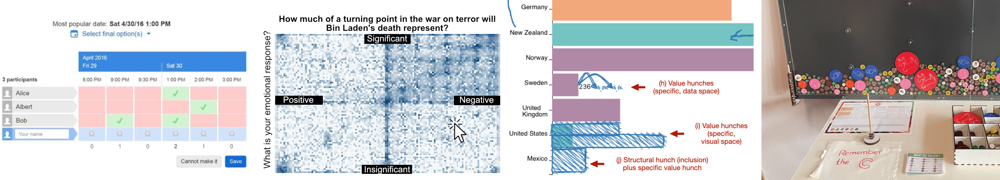

Input visualization --- ``visual representations that are designed to collect (and represent) new data rather than encode preexisting datasets'' --- provides a new lens for direct interactions with data through visualizations and physicalizations. This visualization paradigm opens up new opportunities to collect data for data analysis, digital civics, decision making, personal informatics, data discussion, planning, organization, and more. However, despite nascent research on data input in information visualization, there is a lack of understanding of the phenomenon broadly and the implications for designing new input visualization systems. In this workshop, we aim to gather the human-computer interaction, visualization, and physicalization community to establish a research agenda for input visualization and outline the challenges and opportunities offered by this approach. 
We invite three types of submissions for the workshop: (1) Position papers, (2) Examples of input visualizations, (3) Expressions of interest to participate in the workshop without submitting a paper or example to help us estimate the number of attendees.
(1) Position papers: We invite 2+ page position papers or pictorials that identify, highlight, or address key challenges related to interaction and input in visualizations, including (but not limited to):
Submission deadline: August 4, 2025
Notification: August 19, 2025
(2) Examples of input visualizations: Alternatively, we also invite submissions of examples of input visualizations that you find inspiring or relevant, whether from your own research or other sources. We will use these examples during the workshop as we aim to expand our evolving corpus of input visualizations. Please include an image and a short description of the example, as well as an explanation of why you find this example interesting or inspiring. Submissions should be provided in PDF format, or any other format the fits your submission.
(3) Expressions of interest to participate: If you are interested in participating in the workshop, even without submitting a position paper or example, please fill out the form as well, as this will help us estimate the number of attendees.
It is a one-day workshop.
This will be update soon ... :-) <3